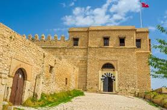
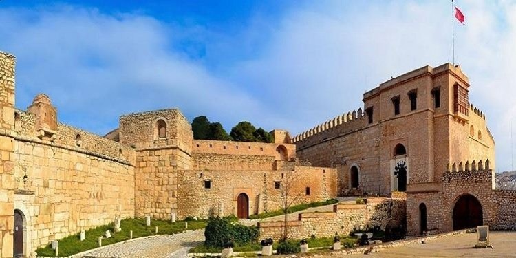
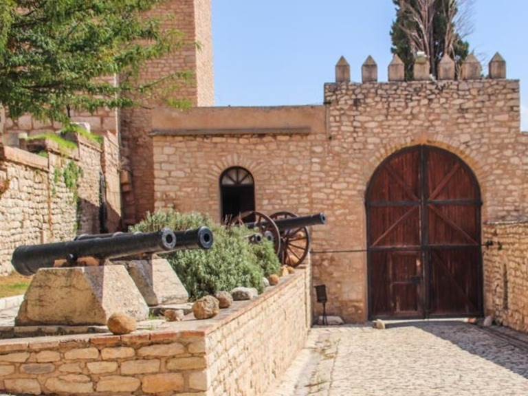
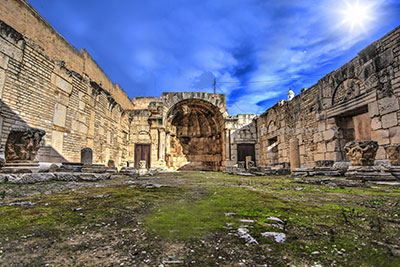
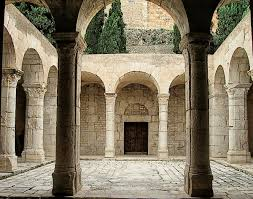
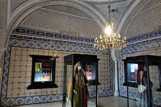
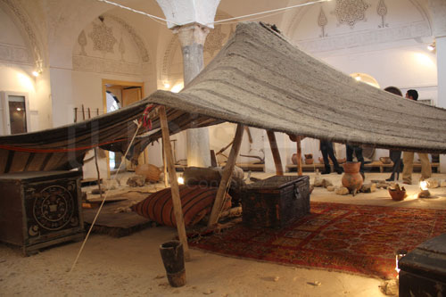

Kef
Patrimoine historique et charme authentique
À propos de Kef
Le gouvernorat du Kef est situé dans le nord-ouest de la Tunisie. Cette région historique est connue pour son riche patrimoine archéologique, ses paysages montagneux et ses traditions authentiques. Le Kef est également un important centre culturel et économique de la région.
Emplacement
Le Kef est situé dans le nord-ouest de la Tunisie, bordé par la Méditerranée au nord et traversé par des chaînes montagneuses. La région est stratégiquement positionnée entre les gouvernorats de Jendouba, Siliana et Kasserine. Elle bénéficie d'un climat favorable et de ressources naturelles abondantes.
Histoire
Le Kef possède une histoire millénaire, avec des vestiges remontant à la période préhistorique et antique. La région a été un centre important sous les Numides, les Romains et les dynasties islamiques. Le château de Kef, situé sur la colline surplombant la ville, date des périodes médiévales et ottomanes. Le Kef a également joué un rôle significatif dans la lutte pour l'indépendance de la Tunisie.
Caractéristiques
- Patrimoine Archéologique : Le Kef abrite des vestiges importants de l'époque romaine et islamique, incluant des sites archéologiques et des musées régionaux.
- Architecture Ottomane : La ville du Kef présente une belle architecture ottomane, avec des maisons traditionnelles aux façades blanches et des portes bleues.
- Paysages Montagneux : La région est caractérisée par des paysages montagneux spectaculaires, idéals pour la randonnée et l'exploration.
- Vie Culturelle : Le Kef offre une vie culturelle dynamique avec des festivals, des marchés traditionnels et une gastronomie authentique tunisienne.
Top Places à Visiter
1. Château de Kef
Forteresse imposante surplombant la ville, le château offre des vues panoramiques spectaculaires sur la région. Datant des périodes médiévales et ottomanes, c'est un site d'importance historique majeure. Les ruines racontent l'histoire millénaire du Kef.



2. Basilique Romaine de Kef
Les vestiges de cette basilique romaine témoignent de l'importance de la région pendant la période romaine. C'est un site archéologique important pour comprendre le passé antique du Kef.



4. Musée Régional du Kef
Ce musée abrite des collections importantes d'artefacts archéologiques et d'objets historiques qui retracent l'évolution de la région du Kef à travers les âges. Une visite incontournable pour les amateurs d'histoire et d'archéologie.


🍽️ Top Restaurants
- Restaurant Kef Palace : Réputé pour sa cuisine tunisienne traditionnelle servie dans une ambiance chaleureuse et accueillante. L'établissement propose un excellent couscous et des plats méditerranéens variés.
- Le Patriarche : Un restaurant familial qui propose une sélection de plats tunisiens authentiques dans un cadre convivial. Connu pour la qualité de ses plats et son service attentif.
- Restaurant El Médina : Situé dans la Médina, ce restaurant offre une cuisine tunisienne raffinée dans un cadre historique authentique. Une excellente option pour déguster des spécialités locales.
☕ Cafés & Salons de Thé Recommandés
- Café El Kef : Un café traditionnel situé au cœur de la Médina. Idéal pour déguster un café ou un thé à la menthe tout en profitant de l'ambiance locale authentique.
- Salon de Thé Al Baraka : Un établissement charmant proposant des thés de qualité et des pâtisseries locales. L'ambiance est relaxante et accueillante pour les résidents comme pour les touristes.
- Café de la Montagne : Offrant une vue panoramique sur la région, ce café est le lieu idéal pour admirer le coucher de soleil tout en savourant un café ou un thé accompagné de pâtisseries maison.